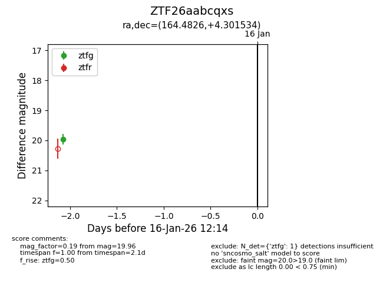
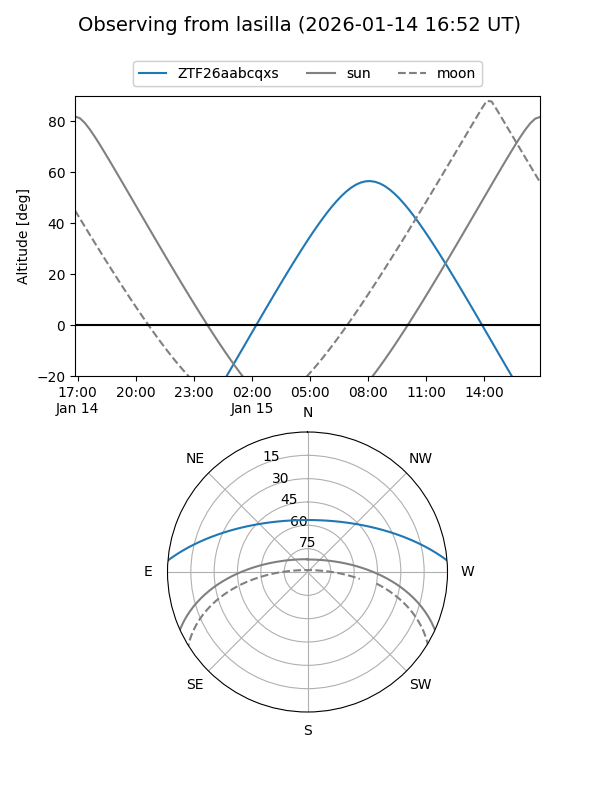
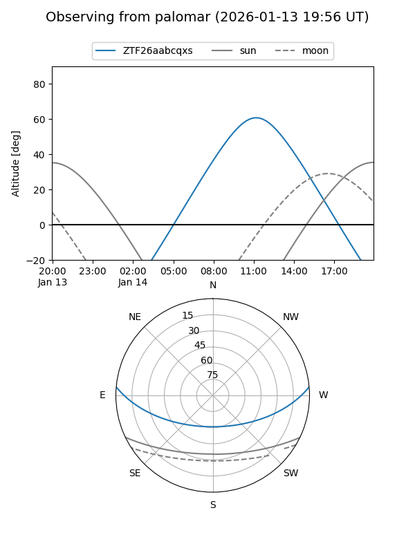

ZTF26aabcqxs
Target ZTF26aabcqxs at 2026-01-14 12:10
Aliases and brokers:
FINK: link
Lasair: link
ALeRCE: link
alt names
ZTF26aabcqxs (ztf,fink_ztf)
Coordinates:
equatorial (ra, dec) = 164.4826,+4.30153
equatorial (HMS+DMS) = 10:57:55.82,+04:18:05.52
galactic (l, b) = (248.0501,+54.59160)
Flags:
Photometry:
last ztfg=19.96
1 ztfg detections
Lightcurve

Visibility


Additional plots